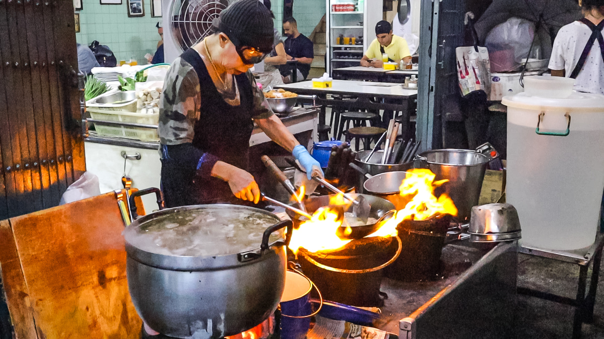
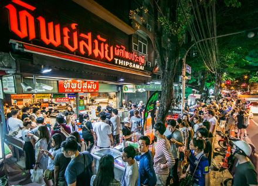
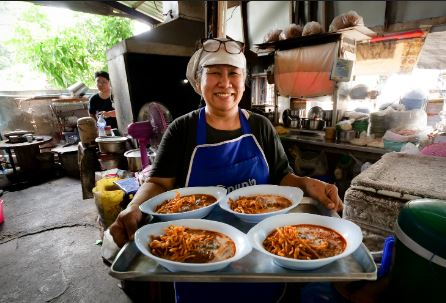
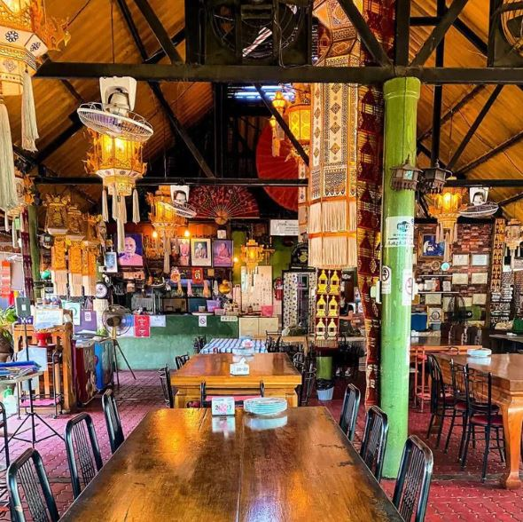

Descubre Tailandia


Itinerario Resumido
- Días 1-3: Bangkok
Explora el Gran Palacio y Wat Arun. Disfruta de la comida callejera y los mercados flotantes. - Días 4-6: Chiang Mai
Recorre el Templo Doi Suthep y toma un curso de cocina tailandesa. - Días 7-9: Phuket
Relájate en las playas de Patong y disfruta de deportes acuáticos. - Días 10-12: Krabi
Admira las impresionantes formaciones rocosas de Railay Beach. - Días 13-15: Islas Phi Phi
Practica snorkel en aguas cristalinas y explora Maya Bay.
Restaurantes Michelin Económicos

Jay Fai
Disfruta de su famoso cangrejo al curry en Bangkok.

Thipsamai
Considerado uno de los mejores pad thai del mundo.

Khao Soi
Destaca por su delicioso Khao Soi con opciones innovadoras

Krua Phech Doi Ngam
Se diferencia por ofrecer la mejor autentica comida tailandesa del norte en un ambiente tradicional.